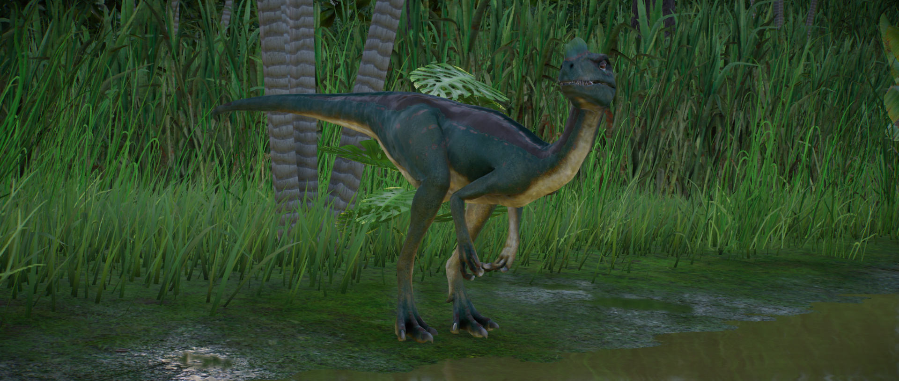

The small theropod Proceratosaurus is a carnivorous dinosaur, and is notable for the bold crest on its snout. Its name comes from the belief, upon its discovery, that the genus was related to Ceratosaurus. However further research has found that it is in fact a cousin of Tyrannosaurus, albeit much smaller at around 4m in length.